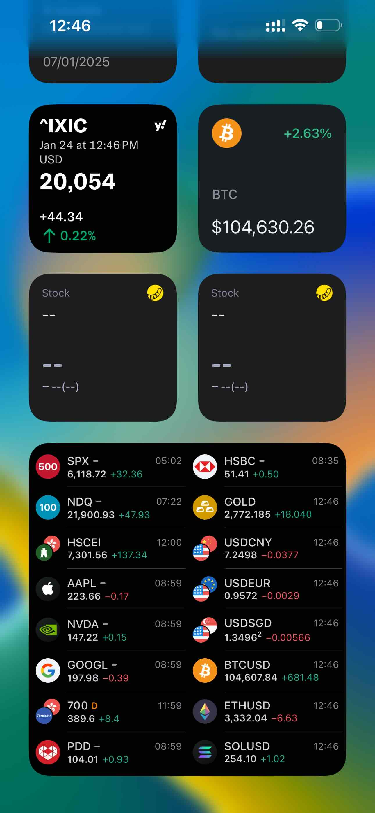

Complete iOS Power User Guide | Original
Table of Contents
- Special Settings in iOS
- Per-App Settings and Font Customization
- Switch Control and AssistiveTouch Features
- TradingView Widget Stability
- Slide to Update Interface Design
- Left Swipe and Apps
- Left Swipe Gesture Hidden Features
- Apple Account App Linking
- WhatsApp Message Info Access
- Cross-Platform Gesture Differences
Special Settings in iOS
Per-App Settings
While using Reddit more frequently, I found the font size too small for comfortable reading. The app suggested adjusting the font size through Per-App Settings. After increasing it slightly, Reddit became much easier to use. Below are the screenshots showing the settings adjustments:
 Per-App Settings Screen 1
Per-App Settings Screen 1
 Per-App Settings Screen 2
Per-App Settings Screen 2
Switch Control and AssistiveTouch
In 2019, I began using my iPhone more actively, especially for watching TikTok videos. However, when my phone was mounted in a lazy bracket, it became difficult to reach the screen and swipe between videos. To solve this, I bought a Bluetooth remote control handle that works with both iOS and Android devices.
In 2022, I purchased another remote control handle specifically for controlling my iPhone while driving. With one hand on the steering wheel, I can effortlessly use the other hand to navigate apps, adjust settings, or control media playback with the handle’s up and down buttons.
This remote control handle is not only great for managing TikTok but also versatile enough for taking selfies and controlling other iPhone functions, adding both convenience and safety to my driving experience.
 Source: AliExpress
Source: AliExpress
TradingView
TradingView’s widget data is more stable than other apps, such as Tiger Trade.
 Source: tradingview.com
Slide to Update
The update method used by OKX is fascinating. Users need to slide to initiate an update.
 Source: tradingview.com
Source: tradingview.com
Left Swipe and Apps
Left Swipe in iOS Lists
The left swipe gesture is a powerful feature that allows users to access hidden functionalities within apps. While right swiping is often the default action (e.g., WeChat doesn’t support left swipes in its conversation list), experimenting with left swipes in other apps can unlock valuable options. When navigating through lists, try swiping left to reveal additional features that can enhance your user experience.
Source: Spotify
Source: WhatsApp Business
Apps Are Linked to the Apple Account
If I install apps using Apple Account A and later log in with Apple Account B, I will need to enter the password for Account A in order to update the apps associated with it. This is because apps are linked to the Apple ID used during installation, not the device itself.
Right Swipe On A Message In Whatsapp
This will display the message info, including whether it has been seen or delivered.
Source: WhatsApp Business